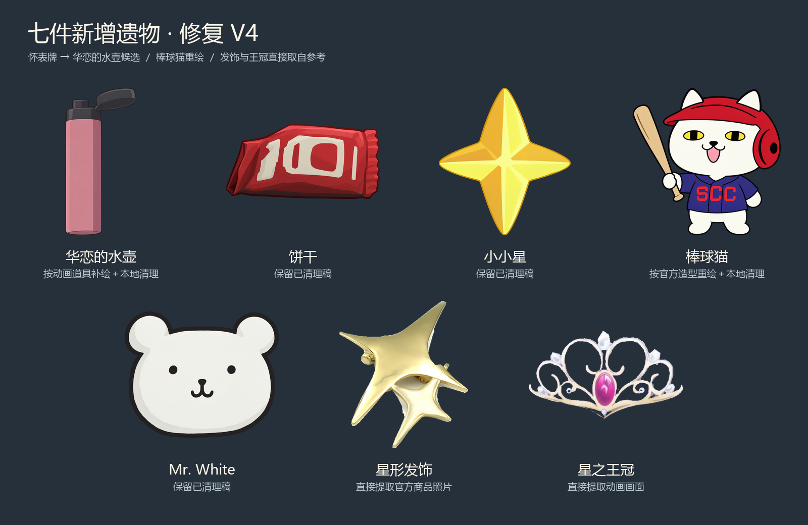
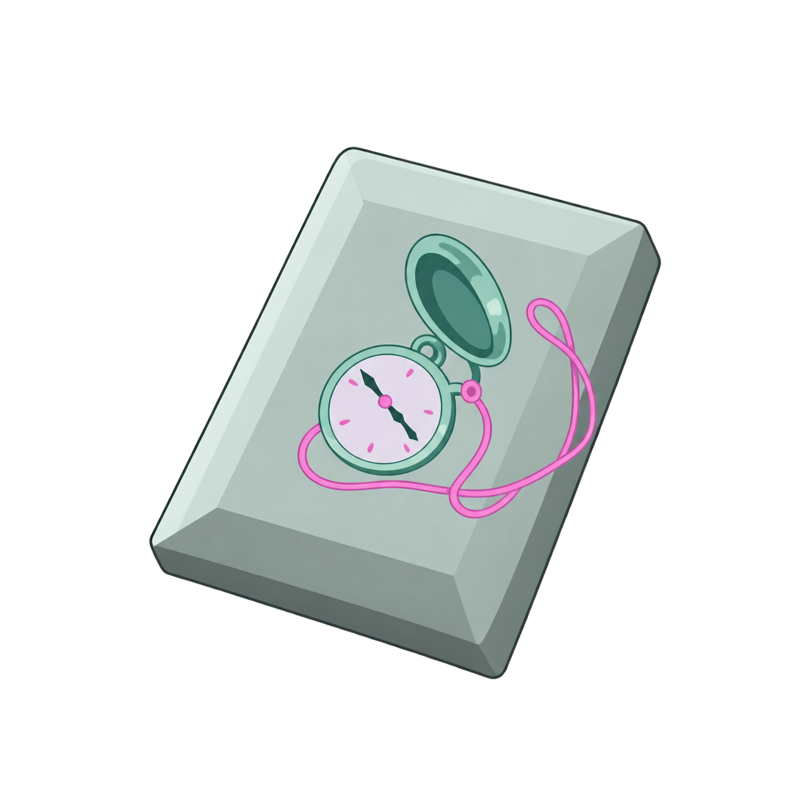

KAREN · RELIC ART · V4
按核实后的造型修复
三张错误稿已替换。普通位改为「华恋的水壶」候选；饼干、金色四角星与 Mr. White 保留已清理稿。新增名称仍是候选，七件效果沿用确认稿。
发饰与王冠直接提取参考图，保留原画面像素。它们的1254画布版只是常规插值，原生抠图一并提供。棒球猫与水壶为参考补绘，并经过本地纹理清理。

01 华恋的水壶
普通 · 名称候选每场战斗第一次获得临时力量时，保留力量2回合。
替换怀表牌。第5话华恋在自主练习间隙喝水后继续练习；将补水与延续体力对应到力量保留，是本次设计联想。粉色直筒、黑色翻盖沿用原画面，被手挡住的部分作最少补全。
展开已撤下的旧稿

此图只保留对照，不包含在当前下载包中。
02 饼干
罕见拾起时，随机获得普通、罕见、稀有闪耀牌各1张。
维持老Mod红色包装的轮廓。原图小字不能可靠辨认，高清稿上的印刷细节仍是推补，不把它认定为原作品牌。
03 小小星
罕见 · 名称候选战斗开始时，将1张光辉加入约定牌堆。
参考：STS1 otherResources/Star.png · 完整原图保留已清理稿 · 透明PNG 维持独立金色四角星及明暗分面。与小光的双星发饰分开，不将二者混用。
04 棒球猫
稀有每场战斗中，每耗尽一张非同名闪耀牌，获得1个闪耀牌奖励。
修正黄眼竖瞳、黑鼻吐舌、露出的猫耳、红色护耳头盔，以及球衣SCC字样。老Mod仅参考持球棒站姿，身体与球衣另用官方毛绒商品核对。
展开已撤下的旧稿

此图只保留对照，不包含在当前下载包中。
05 Mr. White
稀有 · 名称候选每场战斗的第一回合结束时，可选择任意手牌放入约定牌堆。
参考：STS1 MrWhiteRelic.png · 完整原图保留已清理稿 · 透明PNG 保留白熊头、圆耳和黑色鼻口；没有增加身体或挂链。
06 星形发饰
稀有 · 名称候选打出约定之塔时，额外获得8点格挡。
使用原照片RGB，仅制作透明蒙版。保留一大一小两颗四角星的重叠连接、金属厚度及可见五金；不是两颗悬空星光。原生抠图336×384，1254画布版仅常规插值。
展开已撤下的旧稿

此图只保留对照，不包含在当前下载包中。
07 星之王冠
商店每回合开始时禁用1个遗物，然后获得1点能量。
使用原截图RGB，仅制作透明蒙版。保留淡金细冠架、卷曲镂空、纵向粉色宝石及顶部／两侧／底部白色装饰。原生抠图388×223，1254画布版仅常规插值。
展开已撤下的旧稿

此图只保留对照，不包含在当前下载包中。